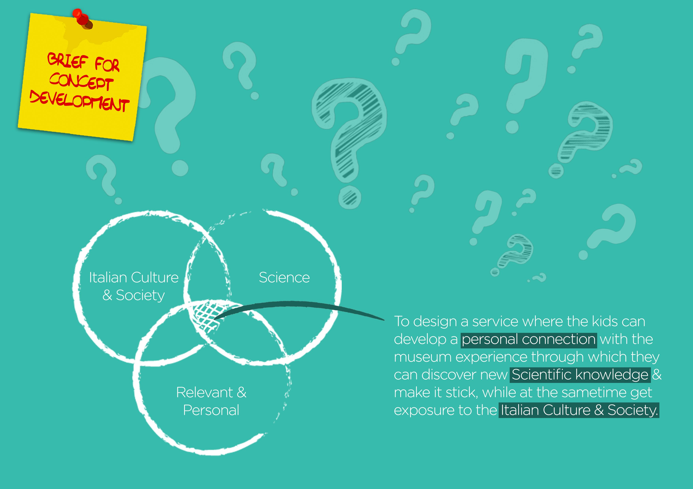

RESEARCH WORKSHOP
MUSEUM
Service Design Thinking was used to experiment and engage with a range of different qualitative and immersive design research techniques, looking for insights and opportunities to improve the experience of the museum’s visitors.
CHALLENGE
The National Museum of Science and Technology entitled to Leonardo da Vinci is the largest of its kind in Italy, one of the most important in Europe and across the world.
The Museum celebrates the great discoveries of the past and the present but is also looking at the future. Following an important transition year with MILAN EXPO 2015 the museum has the opportunity to plan and innovate their service offer and customise the experience to better welcome their different user groups. Discovering the needs, current behaviours and hidden wishes of current visitors.
Out of the four main user groups to be considered, our team was assigned to investigate the Educational Group (school groups, study visits, guided experience, experiential learning & Labs).
PROCESS
The initial research phase started by carrying out desk research, benchmarking to compare services with other leading institutions, identifying of current trends & blue sky research to explore opportunities for innovation.
This was followed by visiting the museum to meet with the education group that was visiting for the day. In-person interviews with students and teachers was followed by shadowing the group for the entire day in order to understand their behaviours.The qualitative research was analysed to develop a persona so that their experience and emotional journey can be mapped out. In addition we also understood, listened to and collected opinions, experiences and expectations of internal staff members involved in delivering services.
Combining the qualitative and secondary research helped in identifying the problem areas, user needs, insights and opportunities. These were discussed with the clients in a co-creation session.
Finally a new problem statement was identified for the new proposals to improve the usability of the museum experience and develop customised services;
SHOW MORE
OUTCOME
All the research findings was collected, analysed and visualised to come up with the following opportunity space to be further developed.
1. Kids are young, and a meaningful museum experience can inspire them to be future Scientist & Technologist.
2. Kids are new to Science & Italian.
3. Culture Making the museum experience relevant & personalised to individual student.
4. Using the kids smartphone/camera to capture, share (with friends, families, other classes), their learning/museum experience as this allows them to bring their parents and friends on weekends.
5. The space before they enter the museum can be used to conduct educational warm up activities related to the museum experience.
6. How to make the kinesthetic learnt knowledge stick and spread.
This resulted in forming of a new problem statement: How might we design a service where the kids can develop a personal connection with the museum experience through which they can discover new Scientific knowledge & make it stick, while at the sametime get exposure to the Italian Culture & Society?
